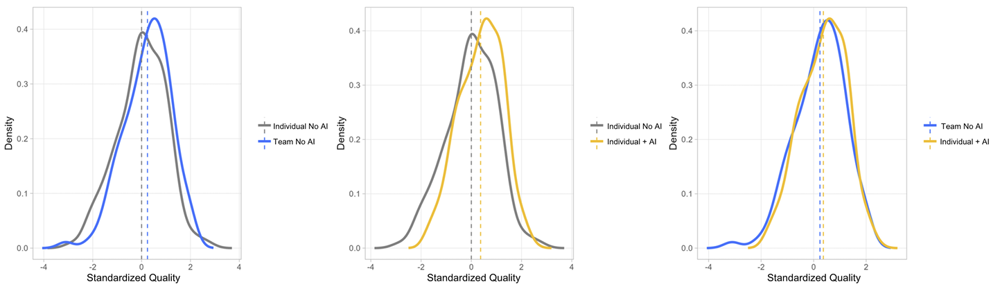
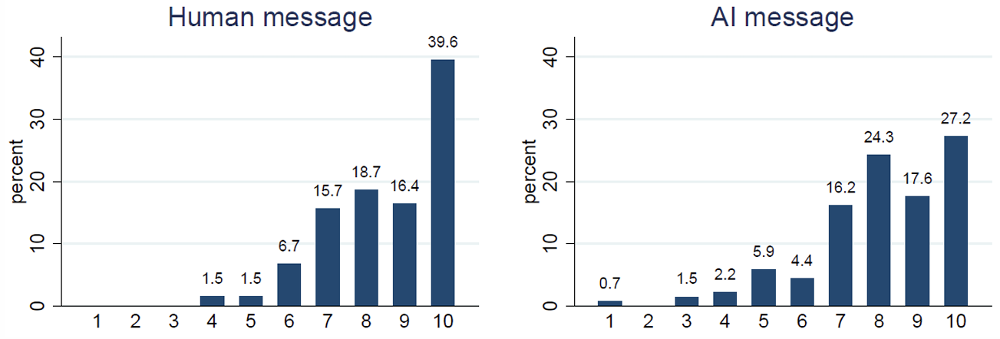

Innovation Economics #1
University of Bozen-Bolzano
May 2025
Today’s roadmap
❓Today’s question:
What are the consequences of AI on productivity, creativity, learning, and trust?⚠️Warning:
The literature is in its infancy — some of these results warrant further study.
Today’s roadmap (cont’d)
Take-homes
- Experimental evidence suggests that AI:
- Improves job productivity (Noy and Zhang 2023; Dell’Acqua et al. 2025).
- Increases individual creativity but can reduce the overall diversity of novel content (Doshi and Hauser 2024).
- Improves academic performance but can harm learning (Bastani et al. 2024).
- Is generally trusted by individuals in coordination problems (Bigoni and Paoli 2025).
AI and productivity
AI and productivity: Experiment 1
Noy and Zhang (2023) study the productivity effects of generative AI in mid-level professional writing tasks.
Sample: 444 experienced, college-educated professionals recruited online via Prolific.
Participants completed tasks that closely resembled their own real-world work activities, including writing press releases, short reports, analysis plans, and sensitive emails.
Most participants rated the assigned tasks as realistic and reported having previously completed similar tasks.
AI and productivity: Experiment 1
- The tasks completed by participants were based on their real-life jobs (manager, HR professional, data analyst, marketer, consultant, grant writer). Here are some examples.
Task example: manager
AI and productivity: Experiment 1
Task example: HR professional
AI and productivity: Experiment 1
Task example: Marketer
AI and productivity: Experiment 1
Incentives
Each participant was required to complete two tasks. On average, each task took 20 to 30 minutes to complete.
Participants were informed that the study would take approximately one hour and that they would be paid $10 for completing the it, plus up to $14 in bonus payments.
The purpose of the bonus payments is to incentivize participants to put effort into the tasks.
Bonus payments were based on ratings given to participants’ writing outputs by a panel of evaluators.
AI and productivity: Experiment 1
Evaluation
The quality of writing outputs was assessed by experienced professionals, recruited online and blind to the experimental conditions.
Each writing task output was rated by three evaluators.
Evaluators were instructed to assess the outputs as if they were encountered in a professional setting, and were paid to grade them carefully.
Each evaluator assigned an overall grade, as well as separate grades for writing quality, content quality, and originality. Grades were given on a 7-point scale.
AI and productivity: Experiment 1
Example of response (HR professional, graded with 2 points out of 7)
AI and productivity: Experiment 1
Example of response (HR professional, graded with 6 points out of 7)
AI and productivity: Experiment 1
Treatments
- A randomly selected 50% of participants (Treatment group):
- Were instructed to sign up for ChatGPT between the first and second tasks.
- Were walked through how to use ChatGPT.
- Were told that they were allowed to use ChatGPT on the second task if they found it useful.
- Had to list all the prompts they had entered into ChatGPT.
- The remaining 50% of participants (Control group) were instructed to sign up for another website and were not told that they could use ChatGPT.
AI and productivity: Experiment 1
Outcome variables and control for AI usage
Productivity was measured as average earnings per minute spent completing the experiment: \[ \text{Productivity} = \frac{\text{Total earnings}}{\text{Time taken to complete the experiment}} \]
Other variables collected included self-reported job satisfaction, self-efficacy, and time spent on specific task phases (brainstorming, drafting, editing).
Potential issue: Participants in the Control group and completing the first task may use ChatGPT without being instructed or permitted to do so, which could bias the results.
AI and productivity: Experiment 1
Control for AI usage (cont’d)
- To control for AI usage, the experimenters…
- Asked participants in the Control group whether they had used ChatGPT.
- Required participants to take a screenshot of their device every minute while performing the task, in order to construct an objective measure of time spent on the task and detect ChatGPT usage.
- Subjects who were found using ChatGPT were excluded from the final dataset of results.
AI and productivity: Experiment 1
Results: Treatment effects on productivity
In the Treatment group, time taken for the second task dropped by 10 minutes (37%) compared to the Control group, which took an average of 27 minutes.
Average grades in the Treatment group increased by nearly one point (0.45 standard deviations), with similarly sized improvements in specific areas such as writing quality, content quality, and originality.
The entire time distribution shifted to the left (indicating faster work), while the entire grade distribution shifted to the right (indicating higher quality).
AI and productivity: Experiment 1
Results: Effects on grades and time across the initial grade distribution
Subjects in the Treatment group who had received a low grade on the first task experienced an increase in grades on the second task compared to subjects in the Control group. Moreover, they reduced the time spent on the second task.
Conversely, subjects in the Treatment group who had received a high grade on the first task maintained a high grade on the second task while substantially reducing their time spent on the task, compared to subjects in the Control group.
AI and productivity: Experiment 1
Results: Effects on task structure
- AI usage significantly changed the structure of writing tasks:
- Prior to the treatment, participants spent about 25% of their time brainstorming, 50% writing a rough draft, and 25% editing.
- Post-treatment, the share of time spent writing a rough draft fell by more than half, while the share of time spent editing doubled.
AI and productivity: Experiment 1
Results: Human-machine complementarity vs. substitutability
- AI may increase workers’ productivity in two ways:
- On the one hand, it may substitute for worker effort by quickly producing output of satisfactory quality that workers submit directly, allowing them to reduce the time spent on the task.
- On the other hand, it may complement workers’ skills — that is, humans and AI working together may produce more than the sum of their parts. For example, ChatGPT might assist with brainstorming or quickly generate a rough draft that humans then edit and refine.
AI and productivity: Experiment 1
Results: Human-machine complementarity vs. substitutability (cont’d)
- No evidence supports the complementarity theory:
- About 68% of treated participants reported submitting ChatGPT’s initial output without editing it.
- On average, treated participants remained active on the task for only 3 minutes after first being observed pasting in a large quantity of text (presumably from ChatGPT).
- This suggests that ChatGPT increases productivity primarily by substituting for worker effort.
AI and productivity: Experiment 1
Results: Effects on subjective outcomes

ChatGPT significantly increased satisfaction with the task (by about 0.40 standard deviations) and somewhat increased self-efficacy (by 0.20 standard deviations), despite the fact that participants primarily used it as a substitute for their own effort.
Why do you think this was happened?
AI and productivity: Experiment 1
Wrap-up
- Generative AI:
- Improves the output quality of low-ability workers while reducing their time spent on tasks, and enables high-ability workers to maintain their quality standards while working significantly faster.
- Substantially reduces variability in productivity.
- Substitutes for worker effort rather than complementing workers’ skills, which might potentially lead to a decrease in the demand for labor.
- Increases task satisfaction and self-efficacy.
The external validity of experiments
Experimental results obtained in the laboratory or online would not be very interesting if they did not reflect real-life behaviour.
Potential issues (Levitt and List 2007):
- Participants typically know they are under a researcher’s microscope, which may lead to behaviours that differ from those in real-world contexts.
- Interactions are typically anonymous and lack opportunities for communication, which can be unrealistic.
- The sample of experimental subjects may differ significantly from the real-world populations of interest, and experimental tasks may not reflect real-world situations.
To read the paper, click HERE.
AI and productivity: Experiment 2
To substantiate the findings from the first experiment and confirm their external validity, let’s examine the field experiment by Dell’Acqua et al. (2025).
The experiment involved 776 professionals at Procter & Gamble (P&G), a global consumer-packaged goods company.
To read the paper, click HERE.
AI and productivity: Experiment 2
Participants
Participants engaged in P&G’s new product development process, either working alone or in teams.
Teams were formed by randomly pairing one Commercial and one R&D professional.
Collaboration occurred remotely through Microsoft Teams, as is standard practice at P&G.
Individuals and teams were recruited from four business units (Baby Care, Feminine Care, Grooming, and Oral Care) across two continents (Europe and the Americas).
AI and productivity: Experiment 2
The tasks
Each individual or team was given one day to develop a new solution addressing a real business need (referred to below as a problem statement) for their business unit.
Each statement was accompanied by relevant market data and additional contextual information.
For confidentiality, the names of specific brand names and company references were removed from the paper.
AI and productivity: Experiment 2
Treatments
- Participants were randomly assigned to one of four conditions according in a \(2 \times 2\) experimental design.
- Control: Individual without AI
- T1: Team without AI
- T2: Individual with AI
- T3: Team with AI
AI and productivity: Experiment 2
Treatments (cont’d)
In the experimental conditions featuring AI usage (T2 and T3), participants received a training session on how to prompt and interact with generative AI tools.
One of the experimenters led the training session and provided participants with a list of recommended prompts.
This standardized approach ensured a uniform baseline of familiarity with generative AI.
AI and productivity: Experiment 2
Incentives
Participants enrolled in the study as part of an organizational upskilling initiative to improve their knowledge of generative AI and its applications in their work.
Additionally, a key incentive was the opportunity for visibility: participants were informed that the best proposals would be presented to their managers, providing a chance to showcase their skills and ideas.
To ensure that all participants had equal opportunities for recognition, rewards for the best proposals were determined within each treatment group (Control, T1, T2, T3).
AI and productivity: Experiment 2
Evaluation
A panel of 22 external evaluators, blind to the experimental conditions, evaluated the solutions submitted by P&G employees.
The evaluators included experienced professionals with backgrounds in business and technology, as well as students or recent graduates from top business or engineering schools.
Each evaluator was assigned approximately 70 solutions to review.
AI and productivity: Experiment 2
Outcome variables
Each solution was assessed by evaluators on five primary dimensions using a 10-point scale: overall quality, novelty, impact, business potential, feasibility.
P&G employees reported their self-assessed positive emotions (excitement, energy, and enthusiasm) and negative emotions (anxiety and frustration) at both the beginning and the end of the experiment.
AI and productivity: Experiment 2
Results: Quality of solutions

Both teams without AI (T1) and individuals with AI (T2) significantly outperform the Control group.
The quality distributions in T1 and T2 are remarkably similar, suggesting that AI can replicate key performance benefits of teamwork and effectively substitute for team collaboration in certain contexts.
AI and productivity: Experiment 2
Results: Time savings
Teams and individuals without AI (Control and T1) spent similar amounts of time on their tasks
The introduction of AI substantially reduced the time spent working on the solution: individuals with AI (T2) spent 16.4% less time than those in the control group, while teams with AI (T3) spent 12.7% less time.
AI and productivity: Experiment 2
Results: Solution quality and expertise
The figure splits the sample between employees for whom product development was a core job task (left-hand panel, ‘core job’) and employees who were less familiar with new product development (right-hand panel, ‘non-core job’).
Without AI, non-core-job employees working alone performed relatively poorly. Even when working in teams, these employees showed only modest improvements in performance.
When given access to AI, non-core-job employees working alone achieved performance levels comparable to those of teams with at least one core-job employee.
This suggests that AI can effectively substitute for the expertise and guidance typically provided by team members who are familiar with the task at hand.
AI and productivity: Experiment 2
Results: Effects on subjective outcomes
Without AI assistance, individuals working alone (Control) showed lower positive emotions and higher negative emotions compared to those working in teams (T1), reflecting the traditional psychological benefits of human collaboration.
Individuals using AI (T2) reported positive emotions that match or exceed those of team members working without AI (T1).
This suggests that AI can substitute for some of the emotional benefits typically associated with teamwork, serving as an effective collaborative partner even in individual work settings.
AI and productivity: Experiment 2
Results: Retention of AI-assisted Solutions
Retention measures the percentage of sentences in the submitted solutions that were originally produced by AI, with a threshold of at least 90% similarity.
For both individuals and groups using AI (T2 and T3), we observe a significant skew towards high retention rates, with many participants retaining more than 75% of AI-generated content in their final solutions.
- This suggests that many participants heavily relied on AI in developing their responses.
- High retention rates do not necessarily indicate passive AI adoption, as participants may engage extensively AI through iterative prompting.
The distribution also shows a significant percentage of participants with zero retention.
This polarized distribution points to two distinct patterns of AI usage: one where participants heavily rely on AI-generated content for their final solutions, and another where AI primarily serves as a collaborative tool for ideation and refinement, rather than direct content generation.
AI and creativity
AI and creativity: Experimental evidence
Doshi and Hauser (2024) examine the impact of AI assistance on creative writing.
Sample: 293 participants (‘writers’) based in the United Kingdom, recruited online via Prolific.
Participants were required to write a short story. The topic was randomly selected from three options: üåî a different planet, üåä the open sea, or üå¥ the jungle.
Tasks were not incentivized. Participants received only a fixed participation payment.
AI and creativity: Experimental evidence
The DAT
Before writing their stories, participants completed the Divergent Association Task (DAT, see Olson et al. 2021).
This task involves listing 10 words that are as different from each other as possible.
The DAT score, which ranges up to 100, is the cosine distance between the underlying word embeddings (which are lists of numbers that summarize what a piece of text means), with higher values indicating greater inherent creativity.
To read the paper, click HERE.
AI and creativity: Experimental evidence
Task example: jungle (Human-only condition)
AI and creativity: Experimental evidence
Evaluation
Stories were graded by an external sample of 500 evaluators, recruited online and blind to the experimental conditions.
Grades were based on the creativity of the stories, which, following the literature, was defined in terms of novelty and usefulness.
Each evaluator assessed six randomly selected stories (two per topic).
AI and creativity: Experimental evidence
Outcome variables
Evaluators assigned separate grades for each of the questions listed below. Grades were given on a 9-point scale.
Questions used to construct the novelty index:
- How novel do you think the story is?
- How original do you think the story is?
- How rare (e.g. unusual) do you think the story is?
Questions used to construct the usefulness index:
- How appropriate do you think the story is for the intended audience?
- How feasible do you think it is to develop the story into a complete book
- How likely do you think would it be that the story is tuned into a complete book if a publisher read it and hired a professional author to expand on the idea?
Other questions:
- Does the story have a suprising twist?
- Is the story funny?
- Is the story boring?
- Is the story well written?
- Did you enjoy reading this story?
AI and creativity: Experimental evidence
Outcome variables (cont’d) and control for AI usage
A measure of similarity between stories was obtained by using OpenAI’s embeddings and then calculating the cosine similarity between the resulting word vectors.
To control for participants’ AI usage, the experimenters asked whether they had used ChatGPT outside the experimental setting (i.e. with their own accounts).
- Writers who answered ‘yes’ were excluded from the final sample.
AI and creativity: Experimental evidence
Treatments
- Writers were randomly assigned to one of three experimental conditions:
- Human-only: no mention of or access to ChatGPT (see previous figure).
- Human with 1 GenAI idea: access to a single three-sentence story idea generated by ChatGPT.
- Human with 5 GenAI ideas: access to up to five different three-sentence story ideas generated by ChatGPT.
AI and creativity: Experimental evidence
Task example: jungle (Human with 1 GenAI idea condition after generating the story idea)
AI and creativity: Experimental evidence
Task example: jungle (Human with 5 GenAI ideas condition after generating two story ideas)
AI and creativity: Experimental evidence
Results: Access to story ideas
Across the two generative AI conditions, 88.4% of participants chose to use generative AI at least once to receive an initial story idea.
In the Human with 5 GenAI ideas condition, where participants could request multiple story ideas, they did so an average of 2.55 times, with 24.5% requesting the maximum of five.
No significant differences between more creative writers (high DAT score) and less creative writers (low DAT score) in how frequently they accessed story ideas.
AI and creativity: Experimental evidence
Example of story (jungle, Human-only, novelty index = 1.94)
AI and creativity: Experimental evidence
Example of story (jungle, Human-only, novelty index = 5.81)
AI and creativity: Experimental evidence
Example of story (jungle, Human with 1 GenAI idea, novelty index = 2.27)
AI and creativity: Experimental evidence
Example of story (jungle, Human with 5 GenAI ideas, novelty index = 5.87)
AI and creativity: Experimental evidence
Results: Treatment effects on creativity
Dashed vertical lines: Human-only condition benchmark.
With respect to novelty, writers in the Human with 1 GenAI idea condition experienced a 5.4% increase over those in the Human-only condition. Writers in the Human with 5 GenAI ideas condition show an 8.1% increase in novelty compared to writers in Human-only .
The usefulness of stories from writers in Human with 1 GenAI idea was 3.7% higher than that of writers in Human-only. Having access to up to 5 GenAI ideas increased usefulness by 9.0% over Human-only and 5.1% over Human with 1 GenAI idea.
Stories written by writers with access to generative AI ideas were significantly more enjoyable, more likely to have plot twists, better written, and less boring. However, they were not funnier.
AI and creativity: Experimental evidence
Results: Treatment effects across the distribution of inherent creativity
Among the most inherently creative writers (high-DAT score), there was little effect of having access to generative AI ideas on the creativity and quality of their stories.
In contrast, access to generative AI ideas substantially improved the creativity and quality of stories written by less inherently creative writers (low-DAT writers).
- For low-DAT writers, access to one generative AI idea increased a story’s novelty by an average of 6.3%, while access to five generative AI ideas yielded an average improvement of 10.7%.
- Similarly, writers with access to one or five generative AI ideas produced stories that were rated higher for usefulness, with average improvements of 5.5% and 11.5%, respectively.
AI and creativity: Experimental evidence
Results: Similarity of stories
Distributions shifted to the right indicate higher similarity.
Access to generative AI ideas made stories more similar to the average of other stories within the same condition.
The greater the number of available story ideas, the more similar the stories tended to be to the AI-generated idea.
AI and creativity: Experimental evidence
Wrap-up
Access to generative AI ideas causes stories to be evaluated as more creative, better written, and more enjoyable, particularly among less creative writers.
However, generative AI–assisted stories are more similar to each other than stories written by humans alone.
The results suggest an increase in individual creativity at the cost of collective novelty.
- This resembles a social dilemma: with generative AI, writers are individually better off, but collectively, less novel content is produced.
AI and learning
AI and learning: Experimental evidence
Bastani et al. (2024) conducted a field experiment to assess the impact of AI assistance on student learning, with a focus on mathematics.
The experiment was conducted at a Turkish high school during the fall semester of the 2023-24 academic year.
Sample: approximately 1000 students, aged 14-17, from about 50 classes.
At the school where the experiment took place, students are randomly assigned to classrooms.
To read the paper, click HERE.
AI and learning: Experimental evidence
Design
- Phase 1: Four 90-minute study sessions during which students solved practice problems on topics from the semester’s math course.
- The materials students could use depended on their assigned treatment (see next slide).
- Phase 2: An exam with no access to any study resources.
- Each exam problem was conceptually similar to a practice problem from Phase 1.
AI and learning: Experimental evidence
Treatments
- Classes were randomly assigned to one of three treatment conditions:
- Control: Students worked through practice problems using only course notes and the textbook.
- GPT Base: Students worked through practice problems using course notes, the textbook, and a laptop with a GPT-based AI tool. The prompt simply instructed the model to help the student.
- GPT Tutor: Similar to GPT Base, but the prompt instructed the model to provide incremental hints only (not the full answer).
AI and learning: Experimental evidence
The AI tool
AI and learning: Experimental evidence
The AI tool: GPT Base
AI and learning: Experimental evidence
The AI tool: GPT Tutor
AI and learning: Experimental evidence
Prompts: GPT Base vs. GPT Tutor
AI and learning: Experimental evidence
Incentives and control for AI usage
Performance on practice exercises (Phase 1) and on the exam (Phase 2) contributed to each student’s final mathematics grade for the semester.
The teacher distributed laptops (provided by the experimenters) with which students could access the website hosting the AI tool. The laptops were configured to block all other websites and applications.
AI and learning: Experimental evidence
Outcome variables
Practice performance: Students’ normalized scores (0-1 range) on the practice problems in Phase 1.
Exam performance: Students’ normalized scores (0-1 range) on the exam in Phase 2.
To avoid potential teacher bias, grades were given by independent evaluators hired specifically for the experiment.
AI and learning: Experimental evidence
Outcome variables (cont’d)
Student perceptions:
- “How much do you think you learned from this whole class session?”
- “How well do you think you performed in this quiz?”
Message volume: Average number of messages sent by students to GPT per problem.
Conversation quality: fraction of non-superficial messages sent by students to GPT (messages were deemed superficial if they simply asked for the answer).
AI and learning: Experimental evidence
Results: Treatment effects on learning
The coefficients on GPT Base and GPT Tutor measure changes in the outcome variables relative to the Control group, which serves as the omitted reference category.
Additional controls: session, grader, grade level, and teacher fixed effects.
Average performance on practice problems in GPT Base and GPT Tutor significantly exceeded that of the Control group by 0.137 and 0.361 points, respectively. The Control group, which only had access to textbooks, had a mean score of 0.28.
In the subsequent unassisted exam, student performance in GPT Base significantly declined by 0.054 points relative to the Control group.
Conversely, performance in GPT Tutor was not significantly different from performance in the Control group.
AI and learning: Experimental evidence
Results: Variability in performance
In the practice problems, the variability of grades was greater in the Control group than in the GPT Base and GPT Tutor groups. That is, AI assistance reduced students’ ‘skill gap’ by providing the greatest benefits to low-performing students.
However, this reduction in the skill gap did not persist and disappeared when access to generative AI was removed in the final exam.
AI and learning: Experimental evidence
Results: Students’ perception

Additional controls: session, grader, grade level, and teacher fixed effects.
Students’ self-reported perceptions of the AI tool’s impact on their exam performance and learning were overly optimistic.
Although students in GPT Base performed worse on the exam than those in the Control group, they did not perceive themselves as having performed worse or learned less.
Similarly, while students in GPT Tutor did not outperform those in the Control group on the final exam, they believed they had performed significantly better.
AI and learning: Experimental evidence
Results: AI-human interactions
The left-hand figure shows the average number of messages per problem sent by students to the AI tool in each session, which is significantly higher in GPT Tutor than in GPT Base.
The right-hand figure shows the average percentage of non-superficial questions asked by students in each session. In GPT Base, only a small fraction of conversations are non-superficial, indicating that most students used the AI tool primarily to obtain solutions.
In contrast, a significant fraction of students in GPT Tutor engaged with the tool in a more substantive way.
AI and learning: Experimental evidence
Wrap-up
It seems that many students use GPT as a replacement for their own reasoning, rather than as a tool to enhance it.
This is concerning, especially given that human reasoning and problem-solving skills were already in decline even before the advent of AI.
AI and coordination
University assignments as a minimum effort game
Imagine two students working on a group assignment together.
To get a good grade, both students need to put a lot of effort into the assignment.
However, if one student doesn’t do their part and puts in little effort, the grade will still be low, even if the other student works hard.
This creates a situation where both students might think, “If my partner isn’t going to try, why should I?”
The minimum effort game
This story can be modelled as a minimum effort game, a coordination game where players simultaneously choose an action (labelled ‘effort’).
Each player’s payoff depends on their own effort level as well as on the smallest effort level chosen within their group.
Coordination of all group members on the same effort level results in a Nash equilibrium.
The minimum effort game (cont’d)
Due to the multiplicity of equilibria, people often fail to coordinate on the most rewarding equilibrium (that is the equilibrium in which all players choose the highest effort level).
Leadership has been proved to be effective in improving coordination by sending a signal.
AI and coordination
The leader’s signal should demonstrate a commitment to high effort and appeal to mutual benefit. An example might be:
“I’m fully committed to doing my best on this assignment. Let’s all put in full effort so we can get the highest grade possible.”
What would happen if a group member were to notice that the leader had sent AI-generated messages as signals? Would this undermine the leader’s credibility?
Put differently, does coordination suffer when it is known that the leader relies on AI-generated signals to encourage others to exert high effort?
AI and coordination: Experimental evidence
Bigoni and Paoli (2025) conducted an online experiment in which participants were randomly assigned to groups of five to play a minimum effort game.
One player in each group was randomly selected to be the leader and could send either human- or AI-generated signals.
The followers were informed whether the signal they received was human- or AI-generated.
Sample: 600 participants recruited via ORSEE.
AI and coordination: Experimental evidence
Research questions
How frequently do leaders rely on AI to generate their messages?
Do followers exhibit AI aversion?
Do human- and AI-generated signals have different effects on participants’ beliefs about others’ behaviour?
AI and coordination: Experimental evidence
The game
In the experiment, each group member chose an effort level between 0 (lowest) and 3 (highest).
The reward (payoff) of each participant was given by the table below.
AI and coordination: Experimental evidence
Design
- The experiment consisted of three phases:
Participants played the minimum effort game with no leader/follower distinction and without receiving any feedback about the outcome of the interaction.
This served as a baseline against which to measure the results.
One participant per group was randomly selected to be the leader. The leader chose an effort level and wrote a message to improve coordination.
After writing their message, the leader saw a message generated by ChatGPT for the same purpose and could choose whether to use ChatGPT’s message or keep their own.
Followers knew whether the message was human- or AI-generated. Each follower simultaneously chose their effort level after reading the message, without directly observing the leader’s effort choice.
A questionnaire was administered to participants to measure the persuasiveness of the signal and their beliefs about other group members’ behaviour.
AI and coordination: Experimental evidence
Outcome variables
Effort level (0-3 scale)
Persuasiveness of the signal (0-10 scale)
Followers’ beliefs about the leader’s effort: “What effort level do you think the leader chose?”
Followers’ beliefs about other followers’ effort: “How many of the other group members (leader excluded) do you think chose an effort level of 0/1/2/3?”
Leader’s beliefs about the followers’ effort: “How many of the other group members do you think chose an effort level of 0/1/2/3?”
AI and coordination: Experimental evidence
- Only 12.7% of leaders chose to send the AI-generated message.
Example of human-written message
AI and coordination: Experimental evidence
Example of AI-written message
- Question: Which message do you think is more persuasive? Would you exert high effort in both cases, in only one case, or in neither case? Why?
AI and coordination: Experimental evidence
Results: Effort choices
Do followers react differently to human-written and AI-generated messages? Short answer: No.
No significant difference between the Human message and AI message conditions.
Both signaling conditions (Human message and AI message) resulted in significantly higher coordination compared to the Baseline.
AI and coordination: Experimental evidence
Results: Persuasiveness of messagges

- On average, human-written messages were more persuasive than AI-generated messages…
AI and coordination: Experimental evidence
Results: Beliefs about others’ effort
…but the difference in persuasiveness did not significantly impact followers’ beliefs about others’ effort choices.
That is, followers did not appear to exhibit AI aversion.
Moreover, on average, leaders who chose to send an AI-generated message did not differ in behaviour or beliefs from leaders who sent the message they had written.
AI and coordination: Experimental evidence
Wrap-up
- In the minimum effort game, followers do not exhibit AI aversion toward signals sent by leaders.
- Human-written messages are, on average, more convincing than AI-generated messages.
- However, the nature of the messages does not significantly impact beliefs or behaviour.